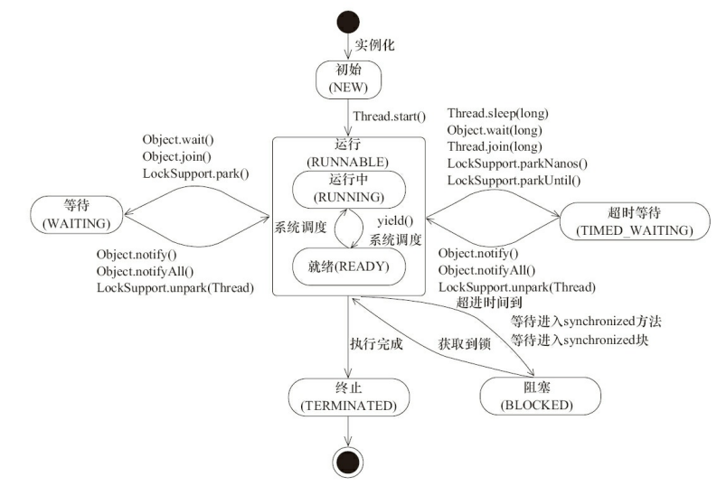

Java的6种线程状态
NEW
线程被构建，但是还没有调用start方法
RUNNABLE
JAVA线程把操作系统中的ready和running两种状态统一称为“运行”
BLOCKED
运行的线程在获取对象的同步锁时，若该同步锁被其他线程锁占用了，那么 jvm 会把当前的线程放入到锁池中
WAITING
等待其他线程的通知或中断
TIMED_WAITING
超时以后自动返回
TERMINATED
运行结束或死亡

操作系统的5种线程状态
new
新建，已占用内存空间和其他系统资源，但还没有开始执行
ready
开始执行，等待系统调度分配CPU使用权
running
线程获得了CPU使用权，正在执行
waiting
等待/挂起，让出CPU资源给其他线程使用
terminated
运行结束或死亡
线程的终止与复位
终止
线程的终止，并不是简单的通过调用stop方法。虽然API仍然可以调用，但是和其他的线程控制方法如suspend、resume一样都是Deprecated的不建议使用，stop方法在结束一个线程时并不会保证线程的资源正常释放，因此会导致程序可能出现一些不确定的状态。要优雅的去中断一个线程，在线程中提供了一个interrupt方法。当其他线程通过调用当前线程的interrupt方法，表示向当前线程打个招呼，告诉它可以中断线程的执行了，至于什么时候中断，取决于当前线程自己，interrupt本质上是通过unpark方法去随机唤醒一个其他线程并将当前线程的中断标识位设为true。当前线程通过检查自身是否被中断来进行响应，可以通过isInterrupted方法来判断是否被中断。
Thread thread = new Thread(() -> { while (!Thread.currentThread().isInterrupted()) { System.out.println("execute"); } }, "interruptDemo"); thread.start(); TimeUnit.SECONDS.sleep(1); thread.interrupt();复位
线程中还提供了静态方法Thread.interrupted()对设置中断标识的线程复位。除此以外如sleep/wait/join等方法都会抛出InterruptedException异常，在InterruptedException抛出之前，JVM会先把线程的中断标识位清除，然后才会抛出InterruptedException，这个时候如果调用isInterrupted方法，也会返回 false。
Thread thread = new Thread(() -> { while (!Thread.currentThread().isInterrupted()) { try { System.out.println("execute"); Thread.sleep(1000); } catch (InterruptedException e) { // 主线程调用当前线程的interrupt()会导致抛出该异常，中断标识位被置为了false，此时循环将继续 // 若想结束循环，再次中断 Thread.currentThread().interrupt(); } } }, "interruptedDemo"); thread.start(); thread.interrupt();